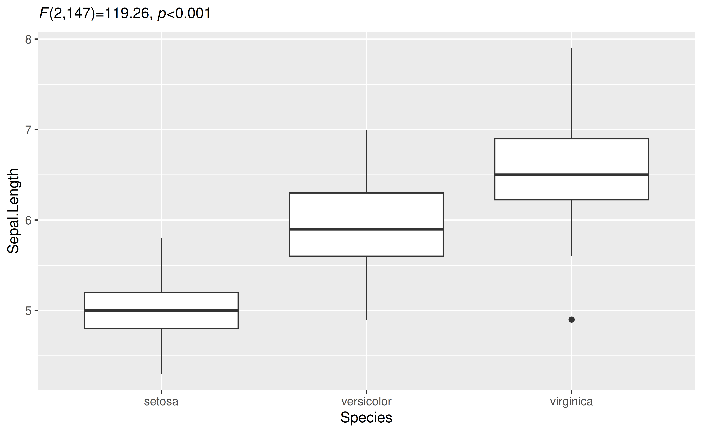
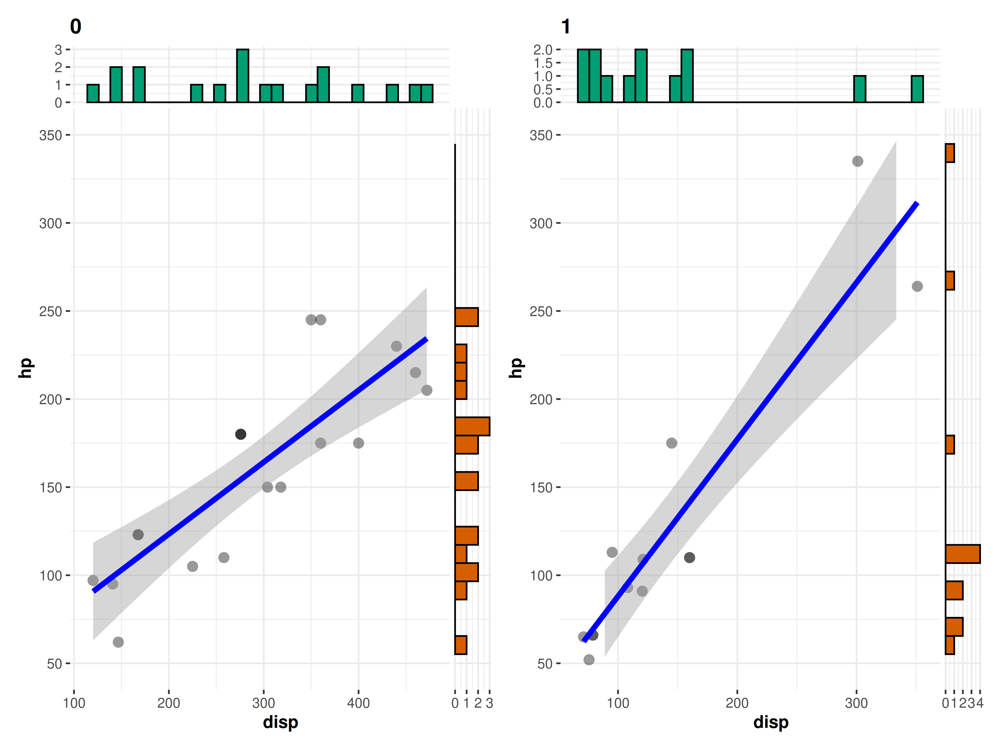
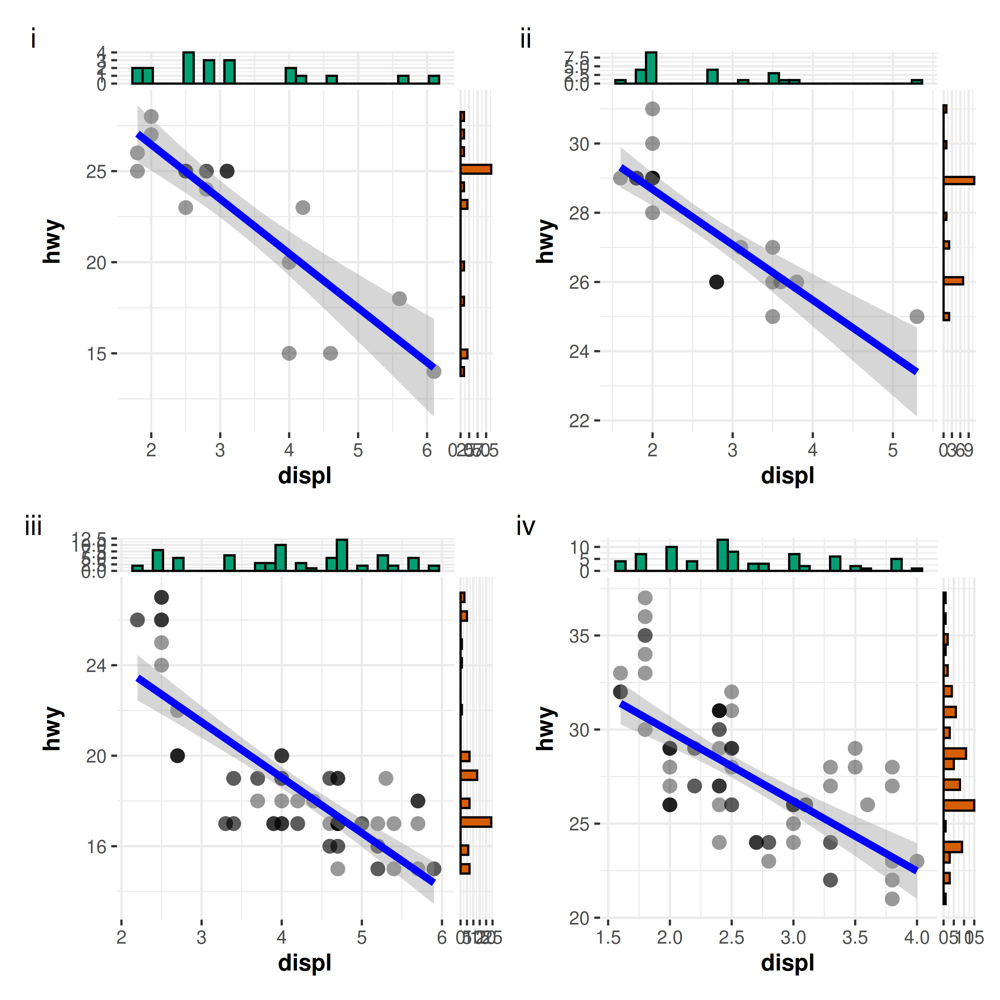
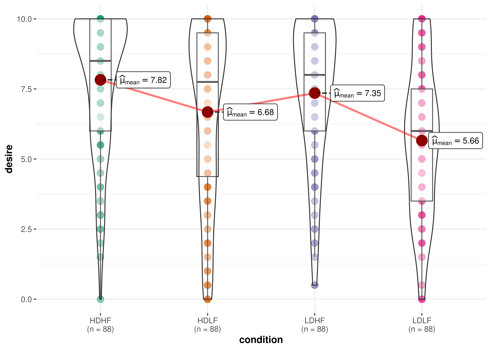
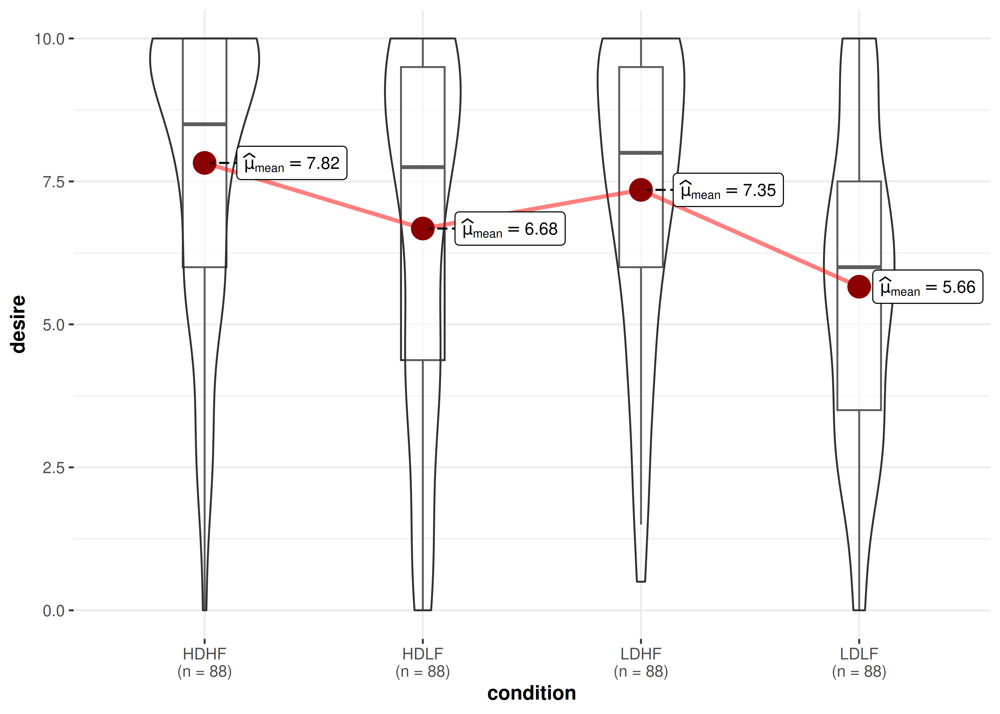
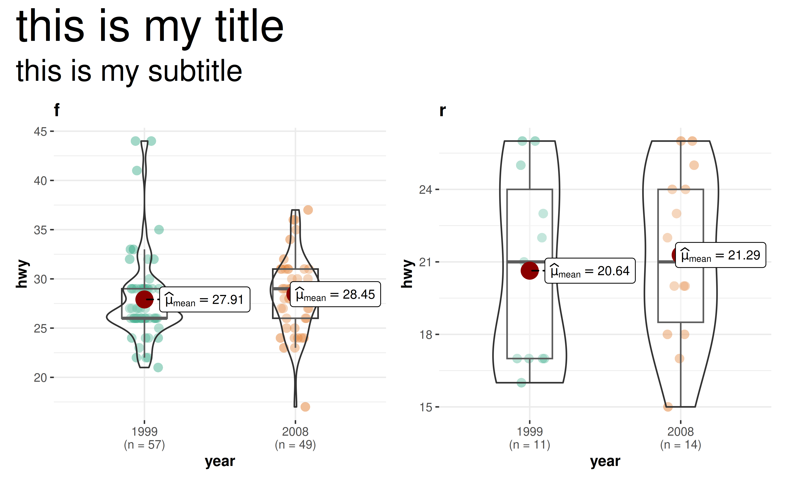

You can cite this package/vignette as:
To cite package 'ggstatsplot' in publications use:
Patil, I. (2021). Visualizations with statistical details: The
'ggstatsplot' approach. Journal of Open Source Software, 6(61), 3167,
doi:10.21105/joss.03167
A BibTeX entry for LaTeX users is
@Article{,
doi = {10.21105/joss.03167},
url = {https://doi.org/10.21105/joss.03167},
year = {2021},
publisher = {{The Open Journal}},
volume = {6},
number = {61},
pages = {3167},
author = {Indrajeet Patil},
title = {{Visualizations with statistical details: The {'ggstatsplot'} approach}},
journal = {{Journal of Open Source Software}},
}Following are a few of the common questions asked in GitHub issues and on social media platforms.
1. I just want the plot, not the statistical details. How can I turn them off?
All functions in ggstatsplot that display results from
statistical analysis in a subtitle have argument
results.subtitle. Setting it to FALSE will
return only the plot.
2. How can I customize the details contained in the subtitle?
Sometimes you may not wish include so many details in the subtitle. In that case, you can extract the expression and copy-paste only the part you wish to include. For example, here only statistic and p-values are included:
library(ggplot2)
library(statsExpressions)
# extracting detailed expression
data_results <- oneway_anova(iris, Species, Sepal.Length, var.equal = TRUE)
data_results$expression[[1]]
#> list(italic("F")["Fisher"](2, 147) == "119.26", italic(p) ==
#> "1.67e-31", widehat(omega["p"]^2) == "0.61", CI["95%"] ~
#> "[" * "0.53", "1.00" * "]", italic("n")["obs"] == "150")
# adapting the details to your liking
ggplot(iris, aes(x = Species, y = Sepal.Length)) +
geom_boxplot() +
labs(subtitle = ggplot2::expr(paste(
italic("F"), "(", "2", ",", "147", ")=", "119.26", ", ",
italic("p"), "<", "0.001"
)))
3. I am getting Error in grid.Call error
Sometimes, if you are working in RStudio, you might see
the following error-
This can possibly be solved by increasing the size of RStudio viewer pane.
4. Why do I get only plot in return but not the subtitle/caption?
In order to prevent the entire plotting function from failing when
statistical analysis fails, functions in ggstatsplot
default to first attempting to run the analysis and if they fail, then
return empty (NULL) subtitle/caption. In such cases, if you
wish to diagnose why the analysis is failing, you will have to do so
using the underlying function used to carry out statistical
analysis.
For example, the following returns only the plot but not the statistical details in a subtitle.
df <- data.frame(x = 1, y = 2)
ggscatterstats(df, x, y, type = "robust")
To see why the statistical analysis failed, you can look at the error from the underlying function:
library(statsExpressions)
df <- data.frame(x = 1, y = 2)
corr_test(df, x, y, type = "robust")
#> # A tibble: 1 × 14
#> parameter1 parameter2 effectsize estimate conf.level conf.low
#> <chr> <chr> <chr> <lgl> <dbl> <lgl>
#> 1 x y Winsorized NA correlation NA 0.95 NA
#> conf.high statistic df.error p.value method n.obs
#> <lgl> <lgl> <lgl> <dbl> <chr> <int>
#> 1 NA NA NA NA Winsorized NA correlation 1
#> conf.method expression
#> <chr> <list>
#> 1 normal <language>5. What statistical test was carried out?
In case you are not sure what was the statistical test that produced the results shown in the subtitle of the plot, the best way to get that information is to either look at the documentation for the function used or check out the associated vignette.
Summary of all analysis is handily available in README:
https://github.com/IndrajeetPatil/ggstatsplot/blob/master/README.md
6. How can I use {ggstatsplot} functions in a
for loop?
Given that all functions in ggstatsplot use tidy
evaluation, running these functions in a for loop requires
minor adjustment to how inputs are entered:
col.name <- colnames(mtcars)
# executing the function in a `for` loop
for (i in 3:length(col.name)) {
ggbetweenstats(
data = mtcars,
x = cyl,
y = !!col.name[i]
)
}That said, if repeating function execution across multiple columns in a data frame in what you want to do, I will recommend purrr-based solution:
This solution would work for x and y
arguments, but not for grouping.var argument, which first
needs to be converted to a symbol:
7. How can I have uniform Y-axes ranges in grouped_
functions?
Across different facets of a grouped_ plot, the axes
ranges might sometimes differ. You can use the
ggplot.component parameter (present in all functions) to
have the same scale across the individual plots:
# provide a list of further `{ggplot2}` modifications using `ggplot.component`
grouped_ggscatterstats(
mtcars,
disp,
hp,
grouping.var = am,
results.subtitle = FALSE,
ggplot.component = list(ggplot2::scale_y_continuous(
breaks = seq(50, 350, 50),
limits = (c(50, 350))
))
)
8. Does {ggstatsplot} work with
plotly?
The plotly R graphing library makes it easy to produce
interactive web graphics via plotly.js.
The ggstatsplot functions are compatible with
plotly.
library(plotly)
# creating ggplot object with `{ggstatsplot}`
p <- ggbetweenstats(mtcars, cyl, mpg)
# converting to plotly object
plotly::ggplotly(p, width = 480, height = 480)9. How can I use grouped_ functions with more than one
group?
Currently, the grouped_ variants of functions only
support repeating the analysis across a single grouping
variable. Often, you have to run the same analysis across a combination
of more than two grouping variables. This can be easily achieved using
purrr package.
Here is an example-
# creating a list by splitting data frame by combination of two different
# grouping variables
df_list <- mpg %>%
dplyr::filter(drv %in% c("4", "f"), fl %in% c("p", "r")) %>%
split(f = list(.$drv, .$fl), drop = TRUE)
# checking if the length of the list is 4
length(df_list)
#> [1] 4
# running correlation analyses between; this will return a *list* of plots
plot_list <- purrr::pmap(
.l = list(
data = df_list,
x = "displ",
y = "hwy",
results.subtitle = FALSE
),
.f = ggscatterstats
)
# arrange the list in a single plot grid
combine_plots(
plotlist = plot_list,
plotgrid.args = list(nrow = 2),
annotation.args = list(tag_levels = "i")
)
10. How can I include statistical expressions in facet labels?
library(ggplot2)
# data
mtcars1 <- mtcars
p <- grouped_ggbetweenstats(
data = mtcars1,
x = cyl,
y = mpg,
grouping.var = am
)
expr1 <- extract_subtitle(p[[1L]])
expr2 <- extract_subtitle(p[[2L]])
mtcars1$am <- factor(mtcars1$am, levels = c(0, 1), labels = c(expr1, expr2))
mtcars1 %>%
ggplot(aes(x = cyl, y = mpg)) +
geom_jitter() +
facet_wrap(
vars(am),
ncol = 1,
strip.position = "top",
labeller = ggplot2::label_parsed
)
11. How to customize which pairs are shown in pairwise comparisons?
Currently, for ggbetweenstats and
ggwithinstats, you can either display all
significant comparisons, all
non-significant comparisons, or all
comparisons. But what if I am only interested in just one particular
comparison?
Here is a workaround using ggsignif:
library(ggsignif)
ggbetweenstats(mtcars, cyl, wt, pairwise.display = "none") +
geom_signif(comparisons = list(c("4", "6")), test.args = list(exact = FALSE))12. How to access data frame with results from pairwise comparisons?
Behind the scenes, ggstatsplot uses
statsExpressions::pairwise_comparisons() function.
You can use it to extract actual data frames used in ggstatsplot functions.
library(ggplot2)
pairwise_comparisons(mtcars, cyl, wt)
#> # A tibble: 3 × 9
#> group1 group2 statistic p.value alternative distribution p.adjust.method
#> <chr> <chr> <dbl> <dbl> <chr> <chr> <chr>
#> 1 4 6 5.39 0.00831 two.sided q Holm
#> 2 4 8 9.11 0.0000124 two.sided q Holm
#> 3 6 8 5.12 0.00831 two.sided q Holm
#> test expression
#> <chr> <list>
#> 1 Games-Howell <language>
#> 2 Games-Howell <language>
#> 3 Games-Howell <language>13. How can I change annotation in pairwise comparisons?
ggstatsplot defaults to displaying exact p-values or logged Bayes Factor values for pairwise comparisons. But what if you wish to adopt a different annotation labels?
You will have to customize them yourself:
library(ggplot2)
library(ggsignif)
# converting to factor
mtcars$cyl <- as.factor(mtcars$cyl)
# creating the base plot
p <- ggbetweenstats(mtcars, cyl, wt, pairwise.display = "none")
# using `pairwise_comparisons()` function to create a data frame with results
df <- pairwise_comparisons(mtcars, cyl, wt) %>%
dplyr::mutate(groups = purrr::pmap(.l = list(group1, group2), .f = c)) %>%
dplyr::arrange(group1) %>%
dplyr::mutate(asterisk_label = c("**", "***", "**"))
df
#> # A tibble: 3 × 11
#> group1 group2 statistic p.value alternative distribution p.adjust.method
#> <chr> <chr> <dbl> <dbl> <chr> <chr> <chr>
#> 1 4 6 5.39 0.00831 two.sided q Holm
#> 2 4 8 9.11 0.0000124 two.sided q Holm
#> 3 6 8 5.12 0.00831 two.sided q Holm
#> test expression groups asterisk_label
#> <chr> <list> <list> <chr>
#> 1 Games-Howell <language> <chr [2]> **
#> 2 Games-Howell <language> <chr [2]> ***
#> 3 Games-Howell <language> <chr [2]> **
# adding pairwise comparisons using `{ggsignif}` package
p +
ggsignif::geom_signif(
comparisons = df$groups,
map_signif_level = TRUE,
annotations = df$asterisk_label,
y_position = c(5.5, 5.75, 6.0),
test = NULL,
na.rm = TRUE
)
14. How to access data frame containing statistical analyses?
You can use the extract_stats() helper function for
this.
library(ggplot2)
p <- ggpiestats(mtcars, am, cyl)
# data frame with results
extract_stats(p)
#> $subtitle_data
#> # A tibble: 1 × 13
#> statistic df p.value method effectsize estimate
#> <dbl> <int> <dbl> <chr> <chr> <dbl>
#> 1 8.74 2 0.0126 Pearson's Chi-squared test Cramer's V (adj.) 0.464
#> conf.level conf.low conf.high conf.method conf.distribution n.obs expression
#> <dbl> <dbl> <dbl> <chr> <chr> <int> <list>
#> 1 0.95 0 0.820 ncp chisq 32 <language>
#>
#> $caption_data
#> # A tibble: 1 × 15
#> term conf.level effectsize estimate conf.low conf.high
#> <chr> <dbl> <chr> <dbl> <dbl> <dbl>
#> 1 Ratio 0.95 Cramers_v 0.415 0 0.671
#> prior.distribution prior.location prior.scale bf10
#> <chr> <dbl> <dbl> <dbl>
#> 1 independent multinomial 0 1 16.8
#> method conf.method log_e_bf10 n.obs expression
#> <chr> <chr> <dbl> <int> <list>
#> 1 Bayesian contingency table analysis ETI 2.82 32 <language>
#>
#> $pairwise_comparisons_data
#> NULL
#>
#> $descriptive_data
#> # A tibble: 6 × 5
#> cyl am counts perc .label
#> <fct> <fct> <int> <dbl> <chr>
#> 1 4 1 8 72.7 73%
#> 2 6 1 3 42.9 43%
#> 3 8 1 2 14.3 14%
#> 4 4 0 3 27.3 27%
#> 5 6 0 4 57.1 57%
#> 6 8 0 12 85.7 86%
#>
#> $one_sample_data
#> # A tibble: 3 × 10
#> cyl counts perc N statistic df p.value
#> <fct> <int> <dbl> <chr> <dbl> <dbl> <dbl>
#> 1 8 14 43.8 (n = 14) 7.14 1 0.00753
#> 2 6 7 21.9 (n = 7) 0.143 1 0.705
#> 3 4 11 34.4 (n = 11) 2.27 1 0.132
#> method
#> <chr>
#> 1 Chi-squared test for given probabilities
#> 2 Chi-squared test for given probabilities
#> 3 Chi-squared test for given probabilities
#> .label
#> <glue>
#> 1 list(~chi['gof']^2~(1)==7.14, ~italic(p)=='7.53e-03', ~italic(n)=='14')
#> 2 list(~chi['gof']^2~(1)==0.14, ~italic(p)=='0.71', ~italic(n)=='7')
#> 3 list(~chi['gof']^2~(1)==2.27, ~italic(p)=='0.13', ~italic(n)=='11')
#> .p.label
#> <glue>
#> 1 list(~italic(p)=='7.53e-03')
#> 2 list(~italic(p)=='0.71')
#> 3 list(~italic(p)=='0.13')
#>
#> $tidy_data
#> NULL
#>
#> $glance_data
#> NULL15. How can I remove a particular geom layer from the
plot?
Sometimes you may not want a particular geom layer to be
displayed. You can remove them by setting transparency
(alpha) for that layer to 0.
For example, let’s say I want to remove the points from
ggwithintstats() plot:
# before
ggwithinstats(
data = bugs_long,
x = condition,
y = desire,
results.subtitle = FALSE,
pairwise.display = "none"
)
# after
ggwithinstats(
data = bugs_long,
x = condition,
y = desire,
point.args = list(alpha = 0),
results.subtitle = FALSE,
pairwise.display = "none"
)
16. How can I modify the fill colors with custom values?
Sometimes you may not be satisfied with the available color palette values. In this case, you can also change the colors by manually specifying these values.
library(ggplot2)
ggbarstats(mtcars, am, cyl, results.subtitle = FALSE) +
scale_fill_manual(values = c("#E7298A", "#66A61E"))
The same can also be done for grouped_ functions:
grouped_ggpiestats(
data = mtcars,
grouping.var = am,
x = cyl,
ggplot.component = ggplot2::scale_fill_grey()
)
17. How can I modify grouped_ outputs using
{ggplot2} functions?
All ggstatsplot are ggplot objects, which
can be further modified, just like any other ggplot object.
But exception to these are all plots returned by grouped_
functions, but there is a way to tackle this.
library(paletteer)
library(ggplot2)
grouped_ggbetweenstats(
mtcars,
cyl,
wt,
grouping.var = am,
results.subtitle = FALSE,
pairwise.display = "none",
# modify further with `{ggplot2}` functions
ggplot.component = list(
scale_color_manual(values = paletteer::paletteer_c("viridis::viridis", 3)),
theme(axis.text.x = element_text(angle = 90))
)
)
18. How can I extract data frame containing results from
{ggstatsplot}?
ggstatsplot can return expressions in the subtitle and caption, but what if you want to actually get back data frame containing the results?
You have two options:
- Use
ggstatsplot::extract_stats()function - Or go to the source package statsExpressions (see examples)
19. How can I remove sample size labels for
ggbarstats?
library(gginnards)
## create a plot
p <- ggbarstats(mtcars, am, cyl)
## remove layer corresponding to sample size
delete_layers(p, "GeomText")20. Statistical analysis I want to carry out is not available. What can I do?
By default, since ggstatsplot always allows just one type of test per statistical approach, sometimes your favorite test might not be available. For example, ggstatsplot provides only Spearman’s \(\rho\), but not Kendall’s \(\tau\) as a non-parametric correlation test.
In such cases, you can override the defaults and use statsExpressions to create custom expressions to display in the plot. But be forewarned that the expression building function in statsExpressions is not stable yet.
library(correlation)
library(statsExpressions)
library(ggplot2)
# data with two variables of interest
df <- dplyr::select(mtcars, wt, mpg)
# correlation results
results <- correlation(df, method = "kendall") %>%
insight::standardize_names(style = "broom")
# creating expression out of these results
df_results <- statsExpressions::add_expression_col(
data = results,
no.parameters = 0L,
statistic.text = list(quote(italic("T"))),
effsize.text = list(quote(widehat(italic(tau))["Kendall"])),
n = results$n.obs[[1]]
)
# using custom expression in plot
ggscatterstats(df, wt, mpg, results.subtitle = FALSE) +
labs(subtitle = df_results$expression[[1]])
21. Is there way to adjust my alpha level?
No, there is no way to adjust alpha if you use grouped_
functions (e.g., grouped_ggwithinstats). You will have to
just report in the paper/article/report, what your adjusted alpha
is.
So, for example, iif 2 tests are being carried out, the alpha is
going to be 0.05/2 = 0.025. So, when you describe the
Methods section, you can mention that only those tests should
be considered significant where p < 0.025. Or you can
even mention this in the caption.
22. How can I build a Shiny app using
{ggstatsplot} functions?
Below is an example using ggbetweenstats function.
library(shiny)
library(rlang)
ui <- fluidPage(
headerPanel("Example - ggbetweenstats"),
sidebarPanel(
selectInput("x", "xcol", "X Variable", choices = names(iris)[5]),
selectInput("y", "ycol", "Y Variable", choices = names(iris)[1:4])
),
mainPanel(plotOutput("plot"))
)
server <- function(input, output) {
output$plot <- renderPlot({
ggbetweenstats(iris, !!input$x, !!input$y)
})
}
shinyApp(ui, server)23. How to change size of annotations for combined plot in
grouped_* functions?
library(ggplot2)
grouped_ggbetweenstats(
data = dplyr::filter(ggplot2::mpg, drv != "4"),
x = year,
y = hwy,
grouping.var = drv,
results.subtitle = FALSE,
## arguments given to `{patchwork}` for combining plots
annotation.args = list(
title = "this is my title",
subtitle = "this is my subtitle",
theme = ggplot2::theme(
plot.subtitle = element_text(size = 20),
plot.title = element_text(size = 30)
)
)
)
24. How to change size of text in the subtitle?
ggbetweenstats(
data = iris,
x = Species,
y = Sepal.Length,
ggplot.component = list(theme(plot.subtitle = element_text(size = 20, face = "bold")))
)
25. How to display pairwise comparison letter in a plot?
This is not possible out of the box, but see this comment.
26. Does {ggstatsplot} carry out assumption
checks?
No, ggstatsplot does not carry out any analysis of whether assumptions are met or not. It will just carry out whatever test you ask it to carry out.
To check these assumptions, you can use a different package called performance:
27. I am on Ubuntu and have trouble installing
{PMCMRplus}?
Linux users may encounter some installation problems. In particular,
the ggstatsplot package depends on the
{PMCMRplus} package.
This means that your operating system lacks gmp and
Rmpfr libraries.
If you use Ubuntu, you can install these
dependencies:
sudo apt-get install libgmp3-dev
sudo apt-get install libmpfr-devThe following README file briefly describes the
installation procedure: https://CRAN.R-project.org/package=PMCMRplus/readme/README.html
For MacOS, have a look at this post.
28. How to modify the secondary Y-axis title?
ggbetweenstats(
mtcars, cyl, wt,
ggplot.component = list(
ggplot2::scale_y_continuous(sec.axis = ggplot2::dup_axis(name = "My custom test"))
)
)29. How to turn off scientific notation in expressions?
set.seed(123)
library(ggstatsplot)
library(WRS2)
ggwithinstats(
WineTasting,
Wine,
Taste,
paired = TRUE
)
ggwithinstats(
WineTasting,
Wine,
Taste,
paired = TRUE,
digits = 4L
)Suggestions
If you find any bugs or have any suggestions/remarks, please file an
issue on GitHub: https://github.com/IndrajeetPatil/ggstatsplot/issues